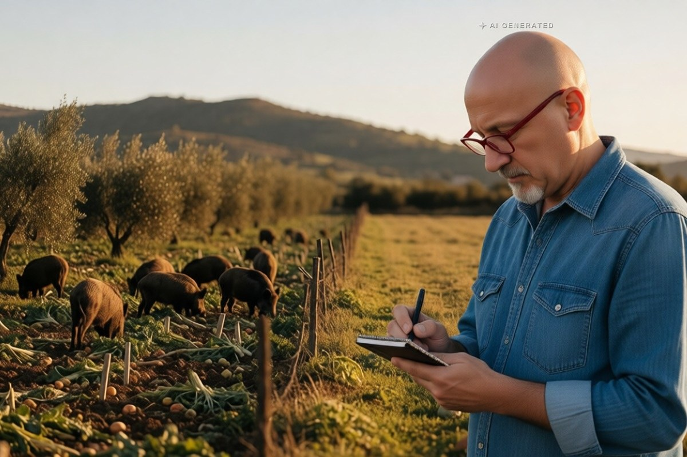

Sicilia · 31 ottobre 2026
Cinghiali e maiali ibridi: la Sicilia chiede lo stato di emergenza

Il Parco delle Madonie parla di un numero incontrollabile di animali, un campo scout è stato evacuato nel Ragusano, i sindaci chiedono deroghe. E con il calendario venatorio annullato il problema rischia di crescere.
di Franco Zanghì
Branchi che scendono dai boschi, attraversano le strade, entrano negli orti e arrivano fino alle case. E non sono soltanto cinghiali: in molte zone sono incroci con il maiale domestico, nati da anni di pascolo brado. Animali più grossi, che fanno più piccoli e che spesso non hanno paura dell'uomo.
Dove siamo arrivati
Il Parco delle Madonie ha chiesto alla Regione di riconoscere lo stato di emergenza per cinghiali e daini, e parla di un numero spropositato e incontrollabile di animali. Nel Ragusano, a Cava d'Ispica, è stato evacuato un campo scout con un centinaio di ragazzi. A Piazza Armerina strade, orti e periferie sono assediati. A Palazzolo Acreide il sindaco chiede deroghe e fondi. E sui Nebrodi, a Galati Mamertino, il sindaco ha firmato un'ordinanza per l'abbattimento dei suini che circolavano vicino a parchi e locali pubblici.
Il capitolo sanitario
Il servizio veterinario dell'Asp, citato in quell'ordinanza, avverte che più suidi selvatici vuol dire più rischio di malattie trasmissibili all'uomo: tubercolosi, brucellosi, trichinellosi, toxoplasmosi. E c'è un pericolo in più: la carne di animali abbattuti o catturati che finisce macellata di nascosto, senza nessun controllo veterinario, e arriva sulle tavole.
Poi ci sono gli agricoltori. Raccolti distrutti in una notte, recinzioni sfondate, indennizzi che arrivano tardi o non arrivano: la Coldiretti parla da tempo di danni incalcolabili.
Il nodo del piano faunistico
Il Tar di Palermo ha annullato il calendario venatorio perché il piano faunistico regionale è scaduto dal 2018. Le associazioni che hanno fatto ricorso avevano le loro ragioni, e la sentenza lo dice chiaro: le regole vanno rispettate. Ma una cosa è la caccia, un'altra è il controllo di una popolazione animale che è fuori controllo, e quello non può fermarsi. Servono piani di contenimento veri, personale formato, controlli veterinari sulla carne.
Le domande, allora, sono queste. Quanto deve aspettare ancora un agricoltore? Chi risponde se un branco provoca un incidente su una statale? E la Regione, che non ha rifatto il piano faunistico, un piano per i cinghiali ce l'ha? Qui non serve un'altra sentenza: servono provvedimenti.
Fonti
- Ente Parco delle Madonie, comunicato ripreso da BlogSicilia, 20 ottobre 2026
- La Sicilia, «Il Parco delle Madonie chiede lo stato d'emergenza: troppi cinghiali e daini»
- La Sicilia, «Cinghiali a Cava d'Ispica, evacuato un campo scout con circa cento ragazzi»
- La Sicilia, «Piazza Armerina assediata dai cinghiali»
- La Sicilia, «Emergenza cinghiali nelle campagne di Palazzolo Acreide, il sindaco chiede deroghe e fondi»
- Comune di Galati Mamertino, ordinanza sindacale numero 45 del 4 novembre 2025, con il parere del Dipartimento veterinario dell'Asp
- Parco delle Madonie, Piano di gestione dei suidi, sull'ibridazione con il maiale da pascolo brado
- Coldiretti Sicilia, dichiarazioni sui danni all'agricoltura riprese da Caccia Passione
La macellazione clandestina è riportata come rischio segnalato dalle autorità sanitarie, non come fatto accertato in un caso specifico.